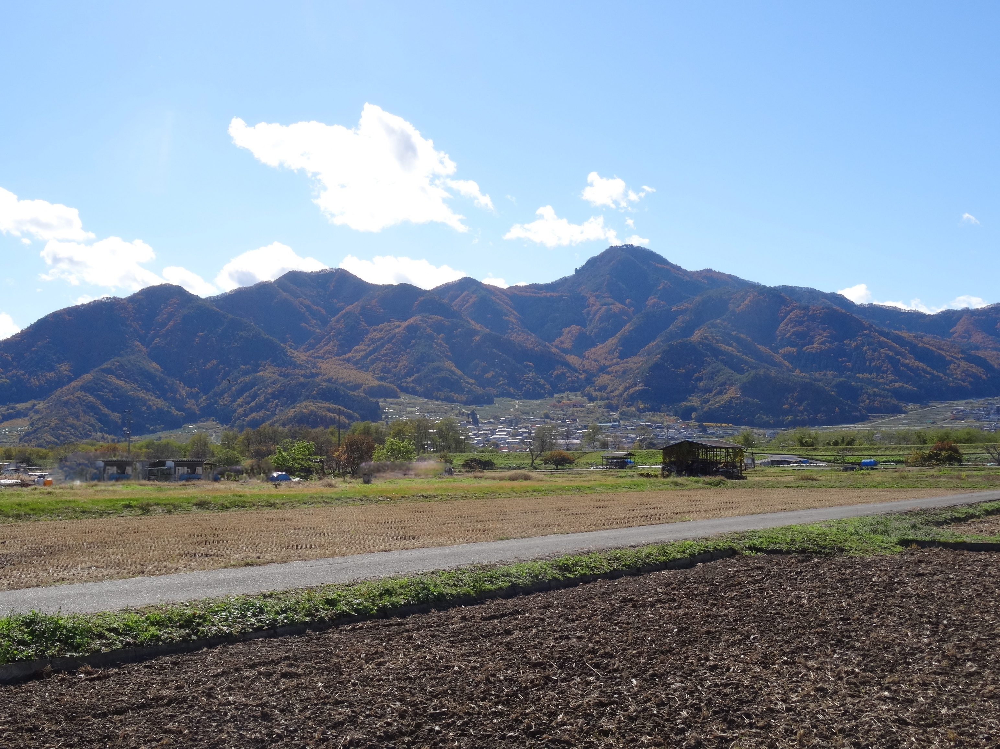
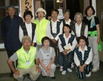

月の都さらしなの里
冠着山 姨捨山
歌枕である姨捨山の歴史と文化、姨捨伝説、霊峰冠着山の自然、山麓の人々の生活と伝統を伝える案内板。そして、次の世代へつなぐ拠り所。
姨捨伝説
冠着山(姨捨山)の麓に伝わる、親孝行と老人の知恵の物語。(製作と語り:更級かたりべの会)

姨捨孝子観音と冠着神社の里宮
姨捨伝説と親孝行者の里を伝える中心的な場所、および冠着山頂の神々を山麓で拝する里宮の記録。
冠着山修験道体験
神々のおりる霊峰冠着山での信仰と、市民団体によって蘇った修験道体験の活動記録。
冠着大学
冠着山の植物や地質、昆虫などを学ぶ学習イベント「冠着大学」の案内チラシアーカイブ。
冠着山麓の人々
歴史ある寺院や、麓の里で活動するコミュニティ、人々をご紹介します。